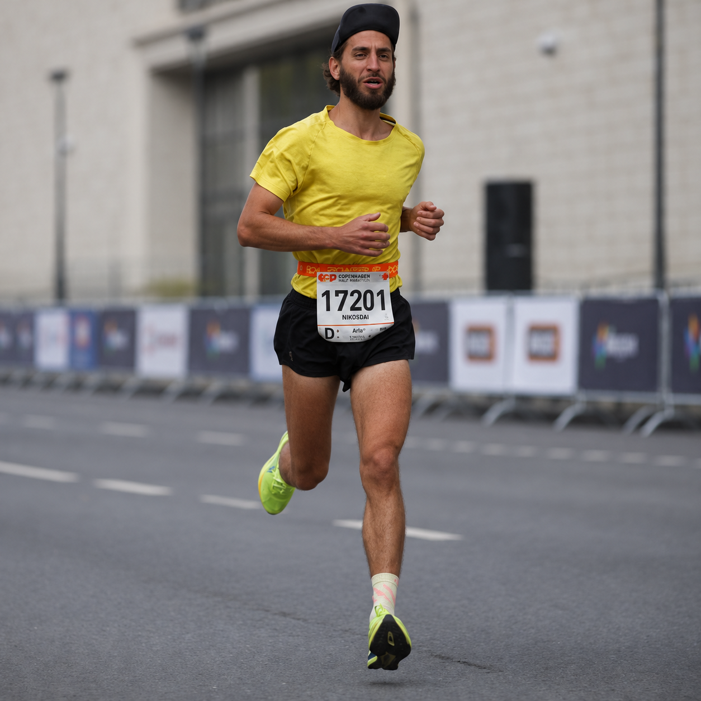
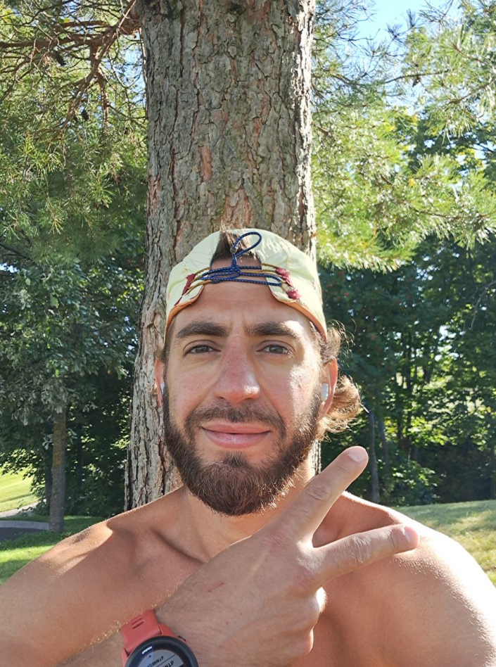

Мой бег
Выхожу за дверь, нахожу свой ритм и смотрю вокруг. У каждой пробежки — своя история.

Николай Демин · Бегаю с 2015 года
Когда я бегу, я чувствую жизнь.
Воздух, землю под ногами и себя —
частью всего, что вокруг.
01 / Про меня
Я люблю бег, своё тело и то спокойствие, которое приходит в движении. Бывает, на пробежке я чувствую себя частью всего: неба, травы, ветра. Здесь я делюсь тем, что замечаю по дороге: в тренировках, в природе и в собственной жизни.
Выхожу за дверь, нахожу свой ритм и смотрю вокруг. У каждой пробежки — своя история.
Мне нравится ощущать силу и лёгкость. Учусь слышать себя: когда двигаться, а когда дать себе отдых.
Моменты радости, ясности и близости к миру. Замечаю их, проживаю и делюсь тем, что откликается.

02 / В движении
Бег со мной с 2015 года. За это время он стал частью моей жизни. Я выхожу на пробежку, чтобы двигаться, побыть с собой и почувствовать мир вокруг.
Мои истории о беге в Telegram ↗Беги и Дыши / Telegram 18+ · Пилот
Расскажи, как бегаешь сейчас, к чему готовишься и когда можешь тренироваться. Бот соберёт спокойную ознакомительную неделю с учётом твоего опыта и расписания.
Собрать план в TelegramПервая версия — для взрослых начинающих бегунов. Без скоростных и марафонских программ. При боли или медицинских ограничениях сначала нужно уточнить допустимую нагрузку со специалистом.
Мой бег / Garmin Connect
Выбери месяц, чтобы посмотреть тренировки.
Последняя пробежка
—Загружаю историюПодробнееЗагружаю данные Garmin…
«Когда я бегу, я — трава, небо,
листок, букашка. Я — всё».

03 / Остаёмся рядом
Увидимся в движении.
Делюсь своим бегом, мыслями и моментами,
которые хочется сохранить.